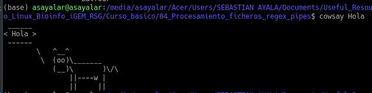

Pipes
Contenido
Pipes¶
En esta parte del curso estudiaremos los pipes. Al igual que las anteriores partes, este tutorial tiene un enfoque general, sin aplicaciones en Bioinformática (lo que veremos más adelante).
Nota importante
En la mayoría de secciones existen preguntas y pequeños ejercicios, marcados con la etiqueta Pregunta, cuyas respuestas deben ser realizadas como deber de esta parte del curso. Te sugerimos guardar las respuestas en el Jupyter notebook y correr los comandos en las preguntas que esto sea posible.
En la última parte de este capítulo se encuentran las repuestas de los ejercicios, pero te recomendamos que primero trates de resolverlos por tu cuenta.
Archivos para este tutorial¶
En este tutorial usaremos los tres archivos que hemos usado en los temas anteriores: Contrapunto_para_Humano_y_Computadora_Cuarteto_de_Nos.txt, alumnos.txt y notas.txt, que se pueden obtener con este link, dentro del repositorio de GitHub del libro.
¿Qué son los pipes?¶
Los pipes (|) son una herramienta de interfaz de línea de comandos (CLI) de SO basados en Unix, que permite re-direccionar el stdout de un comando/programa/proceso al stdin de otro comando/programa/proceso. De esta forma, se pueden usar dos o más comandos de forma que el resultado de un comando sirva como la entrada del siguiente, lo que se puede repetir de acuerdo a la cantidad de pipes.
De esta forma, se crea una conexión directa entre los comandos/programas/procesos, lo que permite que los datos se transfieran entre estos de forma continua en lugar de tener que guardar esta información en archivos de texto temporales o imprimir en pantalla.
La sintaxis general de esta herramienta es de la siguiente forma:
comando1 | comando2 | ... | comandoN
Para entender mejor este concepto, usaremos dos programas sencillos de Linux, fortune que imprime en pantalla frases aleatorias de personas famosas, y cowsay que imprime en pantalla una vaca con un mensaje que escriba el usuario. La ejecución de los dos programas de forma independiente se observa de la siguiente forma:


{kind=link}
Ahora, utilicemos la herramienta pipe con estos dos comandos:

Se observa que el resultado del comando fortune es asignado como la entrada de cowsay. Esta herramienta es muy poderosa y se puede usar para optimizar muchos flujos de trabajo en CLI. Verifica si tienes instalad estos dos programas en tu SO, sino trata de instalarlos y observa los resultados en tu equipo.
Ejemplos del uso de pipes¶
Primero, usaremos algunos ejemplos sencillos del comando echo usando pipes con grep y sed:
echo "abcdef12345" | grep "[0-9]"
echo "Hola mundo !!" | grep "mundo"
echo "Hola mundo Hola mundo Hola mundo" | sed -e 's/Hola/Hi/2' -e 's/mundo/world/2'
Pregunta
¿Qué pipeline podría emplear usando ls y grep para encontrar los archivos de la carpeta img que tenga extensión png, incluyendo información de sus permisos y fecha de modificación?
Ahora, vamos a trabajar con los archivos alumnos.txt y notas.txt. Usaremos el comando paste para juntar la información de los dos archivos, y luego seleccionaremos los Apellidos y Nombres de los estudiantes y la columna de Notas1, lo que podemos hacer en una sola línea de código usando pipes de la siguiente forma:
paste alumnos.txt notas.txt | cut -f 1-2
Pregunta
Siguiendo esta misma lógica, ¿Que pipeline podrías usar para seleccionar solamente los apellidos de los estudiantes del archivo alumnos.txt, ordenarlos alfabéticamente y eliminar los duplicados?
¿Qué pipeline se puede usar para juntar los archivos alumnos.txt y notas.txt, seleccionar los Nombres y Apellidos de los estudiantes y las Notas 1 y 3; eliminar los duplicados y ordenar los datos de mayor a menor considerando la Nota 3?
¿Qué pipeline se podría usar para juntar los archivos alumnos.txt y notas.txt, eliminar los duplicados, e imprimir la línea que posee las notas de la estudiante que tiene apellido Moore?
Ahora, usaremos el archivo Contrapunto_para_Humano_y_Computadora_Cuarteto_de_Nos.txt. ¿Qué pipeline puedo usar para seleccionar todas las líneas que contengan el título del verso, eliminar los que correspondan a la computadora; y guardar esta información en un nuevo archivo llamado versos.txt?
Material suplementario¶
En los siguientes enlaces pueden encontrar información adicional sobre este tema: